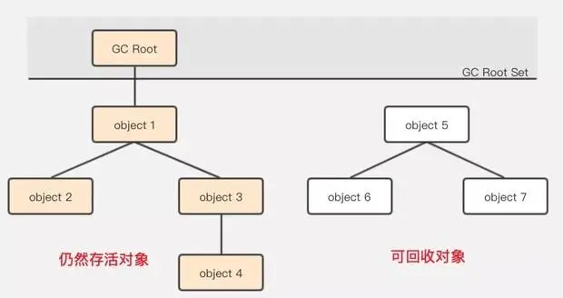
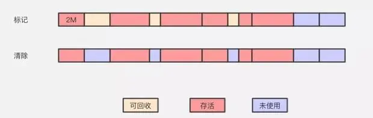
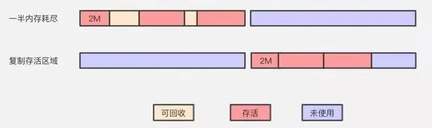
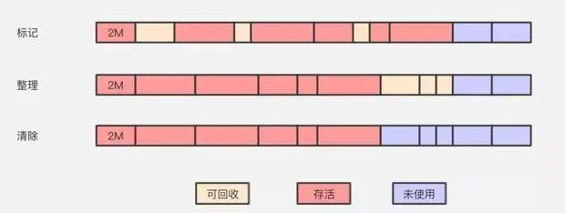

JVM垃圾回收机制
概述
垃圾回收（Garbage Collection，GC），顾名思义就是释放垃圾占用的空间，防止内存泄露。有效的使用可以使用的内存，对内存堆中已经死亡的或者长时间没有使用的对象进行清除和回收。
垃圾判断算法
引用计数法
给每个对象添加一个计数器，当有地方引用该对象时计数器加 $1$，当引用失效时计数器减 $1$。用对象计数器是否为 $0$ 来判断对象是否可被回收。
缺点：无法解决循环引用的问题。
例如创建一个字符串，String m = new String("jack");，这时候 “jack” 有一个引用，就是 m。然后将 m 设置为 null，这时候 “jack” 的引用次数为 $0$ ，在引用计数算法中，意味着这块内容需要被回收了。
引用计数算法是将垃圾回收分摊到整个应用程序的运行当中了，而不是在进行垃圾收集时，要挂起整个应用的运行，直到对堆中所有对象的处理都结束。但 JVM 的垃圾回收就是 Stop-The-World(暂停整个程序) 的。
1 | public class ReferenceCountingGC { |
可以看到，最后这 $2$ 个对象已经不会再被访问了，但由于它们相互引用对方，导致它们的引用计数永远都不会为 $0$，通过引用计数算法无法通知 GC 收集器回收它们。
可达性分析算法
以 GC ROOT 的对象作为搜索起始点，通过引用向下搜索，所走过的路径称为引用链。通过对象是否有到达引用链的路径来判断对象是否可被回收。

可达性算法解决了引用计数所无法解决的循环依赖问题，只要对象无法与 GC Root 建立直接或间接的连接，系统就会将其判定为可回收对象。
Java 内存区域中可以作为 GC ROOT 的对象：
虚拟机栈中引用的对象
1
2
3
4
5
6
7
8public class MyType{
public MyType(String name) {}
public static void main(String[] args) {
MyType s = new MyType("example1");
s = null;
}
}此时的 s 即为 GC Root，当 s 置空时，“example1” 对象也断掉了与 GC Root 的引用链，将被回收。
方法区中类静态属性引用的对象
1
2
3
4
5
6
7
8
9
10
11
12public class MyType{
public static MyType m;
public MyType(String name) {}
public static void main(String[] args) {
MyType s = new MyType("example1");
s.m = new MyType("example2");
s = null;
}
}此时的 s 即为 GC Root，s 置为 null，经过GC后，s 所指向的 “example1” 对象由于无法与 GC Root 建立关系被回收。而 m 作为类的静态属性，也属于 GC Root，“example2” 对象依然与 GC root 建立着连接，所以 “example2” 对象不会被回收。
方法区中常量引用的对象
1
2
3
4
5
6
7
8
9
10
11public class MyType{
public static final MyType m = MyType("final");
public MyType(String name) {}
public static void main(String[] args) {
MyType s = new MyType("example1");
s = null;
}
}m 即为方法区中的常量引用，也是 GC Root，s 置为 null 后，final 对象也不会因没有与 GC Root 建立联系而被回收。
本地方法栈中引用的对象
任何 native 接口都会使用某种本地方法栈，实现的本地方法接口是使用 C 连接模型的话，那么它的本地方法栈就是 C 栈。当线程调用 Java 方法时，虚拟机会创建一个新的栈帧并压入 Java 栈。然而当它调用的是本地方法时，虚拟机会保持 Java 栈不变，只是简单地动态连接并直接调用指定的本地方法。
引用类型
无论是通过引用计数算法判断对象的引用数量，还是通过可达性分析算法判断对象是否可达，判定对象是否可被回收都与引用有关。
Java 中有四种强度不同的引用类型。引用由强到若分为：强引用、软引用、弱引用、虚引用。
强引用：使用 new 一个新对象的方式来创建强引用。只要强引用还存在，垃圾收集器永远不会回收掉被引用的对象。
1
Object obj = new Object();
软引用：一些还有用但并非必须的对象。软引用关联着的对象，在系统要发生内存溢出之前，会把这些对象进行垃圾回收。
1
2Object obj = new Object();
SoftReference<Object> sf = new SoftReference<Object>(obj);弱引用：也是描述一些非必须对象，强度比软引用更弱，只要发生垃圾回收，它就一定会被回收。
1
2Object obj = new Object();
WeakReference<Object> wf = new WeakReference<Object>(obj);虚引用：是最弱的一种引用。设置虚引用的唯一目的是能在这个对象被回收时会收到一个系统通知。
1
2Object obj = new Object();
PhantomReference<Object> pf = new PhantomReference<Object>(obj, null);
垃圾回收算法
标记-清除算法

标记清除算法（Mark-Sweep）是最基础的一种垃圾回收算法，它分为2部分，先把内存区域中的这些对象进行标记，哪些属于可回收标记出来，然后把这些垃圾拎出来清理掉。就像上图一样，清理掉的垃圾就变成未使用的内存区域，等待被再次使用。
缺点：内存碎片。
复制算法

复制算法（Copying）能解决标记清除算法的内存碎片问题。它将可用内存按容量划分为大小相等的两块，每次只使用其中的一块。当这一块的内存用完了，就将还存活着的对象复制到另外一块上面，然后再把已使用过的内存空间一次清理掉。保证了内存的连续可用，内存分配时也就不用考虑内存碎片等复杂情况。
缺点：内存利用率只有 $50\%$。
标记-整理算法

标记-整理算法标记过程仍然与标记-清除算法一样，但后续步骤不是直接对可回收对象进行清理，而是让所有存活的对象都向一端移动，再清理掉端边界以外的内存区域。
标记整理算法解决了内存碎片的问题，也规避了复制算法只能利用一半内存区域的弊端。
缺点：对内存变动更频繁，需要整理所有存活对象的引用地址，在效率上较差。
分代收集算法
分代收集算法融合上述3种基础的算法思想，根据对象存活周期的不同将内存划分为几块。
在新生代中，每次垃圾收集时都发现有大批对象死去，只有少量存活，那就选用复制算法，只需要付出少量存活对象的复制成本就可以完成收集。
JVM 新生代采用这种算法，但并不是划分为大小相等的两块，而是一块较大的 Eden 空间和两块较小的 Survivor 空间，每次使用 Eden 和其中一块 Survivor。在回收时，将 Eden 和 Survivor 中还存活着的对象全部复制到另一块 Survivor 上，最后清理 Eden 和使用过的那一块 Survivor。
Eden 和 Survivor 大小比例默认为 $8:1$，保证了内存的利用率达到 $90\%$。
在老年代中，因为对象存活率高、没有额外空间对它进行分配担保，就必须使用标记-清理算法或者标记-整理算法来进行回收。
内存区域与回收策略
对象优先在 Eden 分配
大多数情况下，对象会在新生代 Eden 区中分配。当 Eden 区没有足够空间进行分配时，虚拟机会发起一次 Minor GC。通过 Minor GC 之后，Eden 区中绝大部分对象会被回收，而那些存活对象，将会送到 Survivor 的 From 区（若 From 区空间不够，则直接进入 Old 区） 。
Minor GC：
当年轻代满时就会触发 Minor GC，这里的年轻代满指的是 Eden 代满，Survivor 满不会引发 GC。通过复制算法 ,回收垃圾。
Major GC：
Major GC 又称为 Full GC。当年老代空间不够用的时候，虚拟机会使用“标记-清除”或者“标记-整理”算法清理出连续的内存空间，分配对象使用。
调用 System.gc() 时，系统建议执行 Full GC，但是不必然执行。
Survivor区
Survivor 区相当于是 Eden 区和 Old 区的一个缓冲。Survivor 分为 $2$ 个区，一个是 From 区，一个是 To 区。每次执行 Minor GC，会将 Eden 区中存活的对象放到 Survivor 的 From 区，而在 From 区中，仍存活的对象会根据他们的年龄值来决定去向。（From Survivor 和 To Survivor 的逻辑关系会发生颠倒：From 变 To ， To 变 From，目的是保证有连续的空间存放对方，避免碎片化的发生）
Survivor 区存在的意义
如果没有 Survivor 区，Eden 区每进行一次 Minor GC，存活的对象就会被送到老年代，老年代很快就会被填满。所以，Survivor 的存在意义就是减少被送到老年代的对象，进而减少 Major GC 的发生。Survivor的预筛选保证，只有经历 $16$ 次 Minor GC 还能在新生代中存活的对象，才会被送到老年代。
大对象直接进入老年代
所谓大对象是指，需要大量连续内存空间的Java对象，典型的大对象就是很长的字符串以及数组。经常出现大对象容易导致内存还有不少空间时就提前触发垃圾收集以获取足够的连续空间来安置它们。
虚拟机提供了一个 XX:PretenureSizeThreshold 参数，令大于这个设置值的对象直接在老年代分配，这样做的目的是避免在Eden区及两个Survivor区之间发生大量的内存复制
长期存活的对象将进入老年代
虚拟机给每个对象定义了一个对象年龄（Age）计数器，如果对象在 Eden 出生并经过第一次 Minor GC 后仍然存活，并且能被 Survivor 容纳的话，将被移动到 Survivor 空间中（正常情况下对象会不断的在Survivor的From与To区之间移动），并且对象年龄设为 $1$。对象在 Survivor 区中每经历一次 Minor GC，年龄就增加 $1$ 岁，当它的年龄增加到一定程度（默认 $15$ 岁），就会晋升到老年代中。对象晋升老年代的年龄阈值，可以通过参数 XX:MaxPretenuringThreshold 设置。
动态对象年龄判定
为了能更好地适应不同程度的内存状况，虚拟机并不是永远地要求对象的年龄必须达到 MaxPretenuringThreshold 才能晋升老年代，如果 Survivor 空间中相同年龄所有对象大小的总和大于 Survivor 空间的一半，年龄大于等于该年龄的对象就可以直接进入老年代，无需等到 MaxPretenuringThreshold中要求的年龄。